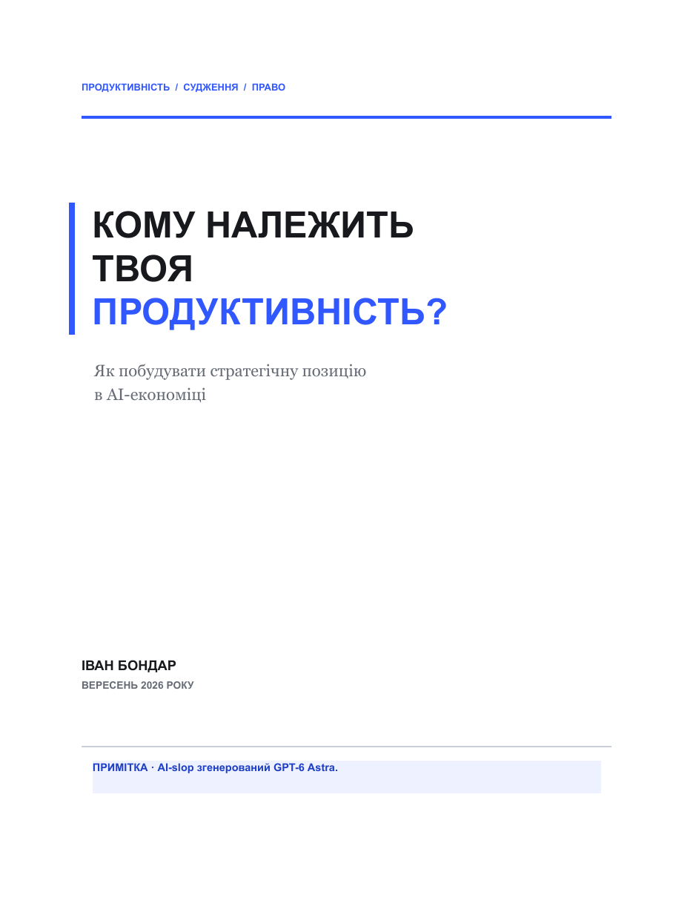

А
Метод передано
Команда користується стандартом, керівниця дякує. Оплата й доступ до результатів залишаються такими самими.
Корисний документ уже є. Нових прав ще немає.
П’ята редакція · безкоштовно
Як побудувати стратегічну позицію в AI-економіці
Для фахівців, які роблять більше з AI й хочуть зрозуміти, що змінюється в їхніх умовах роботи.
67 сторінок · 12 глав · українською · без реєстрації

Початок книги
Керівниця бачить можливість прийняти більше роботи. Аналітик погоджується. Його оплата фіксована, а що сталося після рекомендацій, він бачить рідко.
Згодом постає питання про передавання його методу команді. Що зміниться для самого аналітика?
Стислий переказ альтернативних гілок глави 8. Компанія й персонажі умовні.
А
Команда користується стандартом, керівниця дякує. Оплата й доступ до результатів залишаються такими самими.
Корисний документ уже є. Нових прав ще немає.
Б
До масштабування сторони погоджують час на пробу й участь у розборі результатів. Винагорода лишається відкритим питанням.
Тепер потрібно перевірити, чи домовленість виконають.
В
Доступу й часу не дали. Зовнішній попит теж не підтвердився. Аналітик може зберегти дохід і обмежити нову відповідальність.
Відмова не зобов’язує звільнятися.
Маршрут книги
Одна історія пов’язує економіку роботи, переговори й здатність помічати помилки. Керівник та власник показують іншу сторону угоди фахівця.
Також: пролог, епілог і додатки із заповненим прикладом.
Спробувати на своїй ситуації
Вибери одну робочу угоду. Відділи те, що сталося, від того, як ти це пояснюєш. Назви питання, відповідь на яке змінить наступний крок.
У додатках є форма й повний приклад. Отримати відповідь або змінити умови може зайняти значно більше часу.
Фрагмент умовного запису з додатків · скорочено
Іван Бондар · автор книги
Зібрати в одному маршруті питання, які легко розглядати окремо: чи стала робота кориснішою, чи змінилися права людини та чи збереглася її здатність судити самостійно.
Іван Бондар у LinkedInП’ята редакція побудована переважно з внутрішніх знань мовної моделі й наявного рукопису, без нового зовнішнього дослідження. Попередні редакції залучали зовнішні матеріали.
Тут аргумент розгортається через явні припущення, умовні розрахунки й ситуації з різними наслідками. Вони допомагають розібрати можливий механізм, але не доводять поширеність подій або ефективність порад.
Повна книга українською. Безкоштовно й без реєстрації.